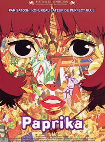
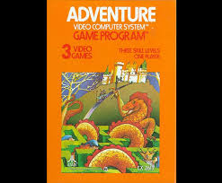
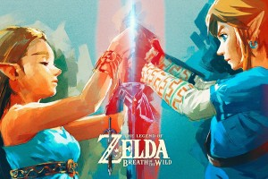

Inspiration
 Parad-OX a pour inspiration principale le film d'animation japonais Paprika. Paprika se dresse dans un monde alternatif où un appareil, nommé DC Mini, permet de visualiser les rêves du porteur. Cette invention, à la base créée pour aider les patients dans leurs séances thérapeutiques, est volée par un individu non identifié.e
De multiples cas de démence sont notés, dûs au fait que les personnages sont plongés dans un rêve éveillé, les rendant dangereux pour la société et eux-mêmes. Le personnage principal, Paprika, personnalité chimérique d'une scientifique ayant aidé à la conception de l'objet, tente alors de découvrir l'identité du criminel et les objectifs qui l'animent.
La particularité de notre jeu est que celui-ci regroupe à la fois un gameplay d'action-aventure, mais également des phases de réflexion, plus posées. Les variations de rythme dans le gameplay font que le joueur ne se lasse pas.
L'un des premiers jeux de ce type est Adventure, de Warren Robinett, sorti sur Atari en 1979. il mélange des combats contre des dragons, mais également de la réflexion, comme des passages dans des labyrinthes par exemple.
Ainsi, pour le Gameplay de notre jeu, nous nous sommes inspirés de différents jeux d'action-aventure, comme la fameuse série The Legend Of Zelda où le héros doit résoudre des énigmes tout en se battant contre diverses créatures pour arriver à la fin du jeu, tout comme dans les franchises Assassin's Creed et Tomb Raider.